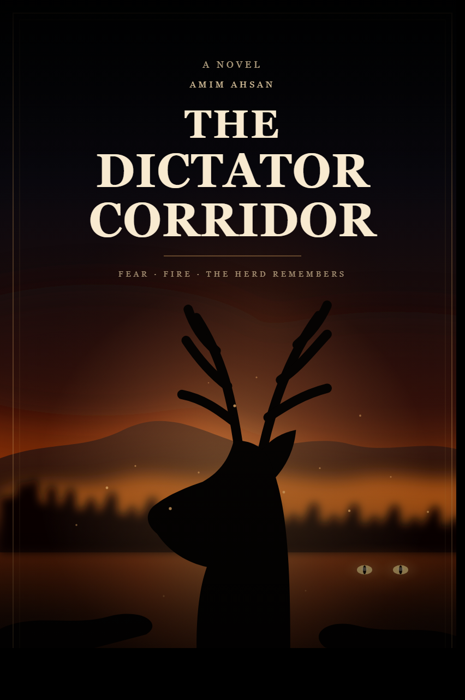

A Novel · 52 Chapters
One road through the mountains. One herd that remembers it. And a Marshal who learned that a people can be governed by the sound of a match being struck.
In the Vardan Republic, the only road between north and south runs through ninety kilometres of mountain called the Corridor. Every October, six thousand red deer walk it. Every October, the Marshal burns it.
Nurlan Aydin has counted those deer for twenty-two years. He has filed the numbers the ministry wanted, signed the permits the ministry printed, and stood on the burning ridgeline with a radio in his hand while the drivers lit the grass and the guests from the capital raised their rifles. He has told himself that a man who keeps his head down keeps his family fed. Then a collared hind he had followed since she was a calf is shot inside the sanctuary, and the camera in his pocket holds the face of the man who fired.
The Dictator Corridor is a novel about the arithmetic of fear: how a state turns a valley into a corridor, a forest into a killing ground, a tiger into a trophy and a herd into evidence. It is also about the moment the arithmetic fails — when fire crosses the road, the animals come down into the city, and the man who has been silent for twenty-two years discovers what he is willing to burn.
Chapter Directory
No chapter matches that search.